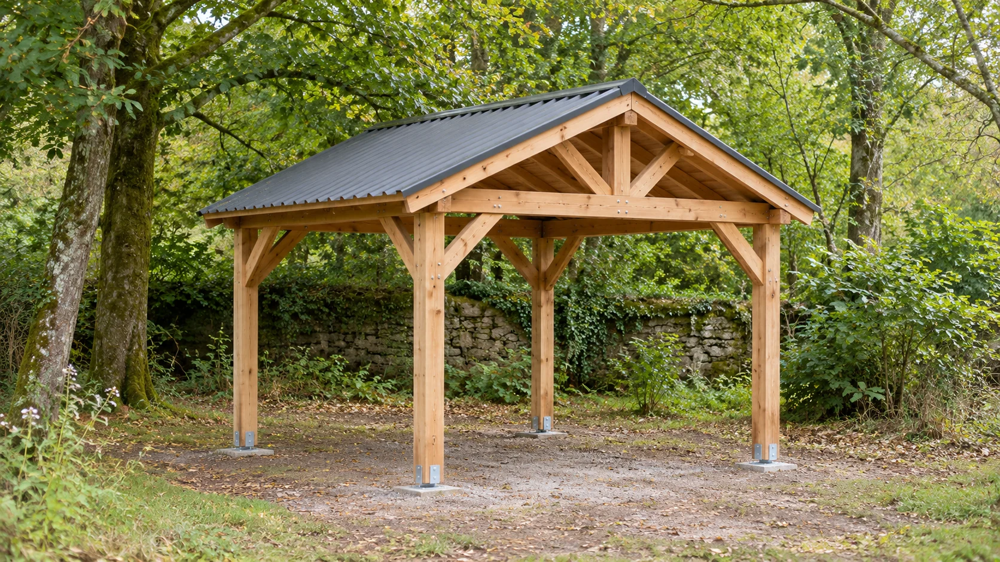

Membre bienfaiteur
Qu’est-ce qu’un membre bienfaiteur La Clé du Parc ?
Un membre bienfaiteur La Clé du Parc est une personne physique ou morale qui effectue un versement à l’association pour contribuer à la dotation financière annuelle en soutien aux parcs du réseau.
La dotation financière annuelle (DFA) consiste à apporter un soutien financier annuel direct aux parcs du réseau pour leurs projets de préservation et de valorisation du patrimoine naturel et culturel des parcs et leurs atouts pour la santé. Les projets sont sélectionnés selon les critères de l’association et présentés par les parcs (cf. la rubrique Soutien aux parcs du réseau de la page Association, consacrée notamment à la dotation financière annuelle).

En début d’année, l’association attribue cette dotation à partir des versements reçus au cours de l’année précédente, auxquels s’ajoutent ses propres excédents de recettes des abonnements. En tant qu’association à but non lucratif, La Clé du Parc affecte ses excédents à la dotation financière annuelle pour renforcer le soutien financier aux parcs du réseau.
Chaque membre bienfaiteur complète, par sa dotation personnelle, le montant global de la dotation financière annuelle versée par l’association et l’ensemble des membres bienfaiteurs. L’intégralité des sommes versées par les membres bienfaiteurs est tracée et allouée à la dotation financière annuelle, sous réserve de l’éligibilité des projets présentés par les parcs et des limites de dotation fixées par l’association pour les projets.
La souscription membre bienfaiteur n’est pas encore disponible.
Comment faire un versement ?
La première étape consiste à vous inscrire en tant que membre invité dans l’application La Clé du Parc (sur lacleduparc.fr) pour accéder au formulaire de déclaration et de paiement de votre dotation.
La seconde étape est de finaliser le formulaire de dotation disponible dans l’ESPACE MEMBRE. Il y a deux types de versements :
- Indépendamment d’un abonnement. Vous effectuez dans ce cas un versement libre entre 10 et 150 euros. Votre dotation est confirmée une première fois par e-mail au moment de l’ordre de paiement, puis après constat du paiement effectif par le service de paiement en ligne de La Clé du Parc.
- Avec un abonnement permanent. Un abonnement permanent a une durée de 12 mois (1 an), de 11 mois ou de 10 mois selon la date de souscription. Vous effectuez dans ce cas un versement fixe de 150 euros en remplissant le formulaire prévu en lien avec la souscription de votre abonnement, jusqu’au paiement de l’ensemble. La dotation est confirmée par e-mail au moment de l’ordre de paiement (en lien avec la commande de l’abonnement), puis après constat du paiement effectif par le service de paiement en ligne de La Clé du Parc. La dotation financière que vous avez versée en complément de l'abonnement est intégralement affectée à la dotation financière annuelle versée par l’association.
La souscription d’un abonnement permanent se fait à partir du formulaire d’abonnement. Deux cas se présentent :
- Si le choix d’une dotation de 150 € précède la commande de l’abonnement, le formulaire d’abonnement vient compléter le formulaire de dotation avant le paiement de l’ensemble.
- Si le choix d’une dotation de 150 € suit la commande de l’abonnement, le formulaire de dotation vient compléter le formulaire de commande avant le paiement de l’ensemble.
Membre permanent La Clé du Parc
Un abonnement permanent apporte des privilèges de service. Ces privilèges se traduisent par droits supplémentaires qui ont pour objectif de permettre aux membres passionnés de plein air de profiter pleinement des bénéfices apportés par La Clé du Parc.
Ces services consistent principalement à autoriser dans l’application :
- un nombre supérieur d’invités (invités distincts, invités simultanés) ;
- l’accès aux fonctionnalités de planification enrichies (IA) et étendues (alertes) pour la recherche ;
- l’accès aux fonctionnalités étendues pour la planification dans les parcs (horizon de planification, plages horaires réservées, accès à la planification des coachs et à l’invitation garantie).
Plus d’informations sur la page Abonnement de l’ESPACE MEMBRE.